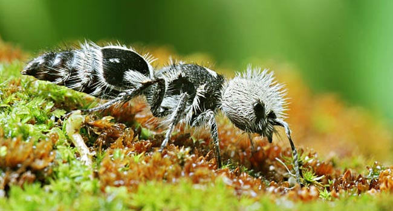

𝔼𝕊𝕋ℝ𝕀𝔻𝕌𝕃𝔸ℂ̧𝔸̃𝕆
Em geral, essa espécie de inseto é silenciosa. No entanto, quando perturbada, ela emite
sons peculiares, agudos,
vibrantes e estridentes, conhecidos como estridulação. Esse comportamento, que é adotado por uma variedade de
artrópodes, resulta da fricção de duas partes rÃgidas do corpo.
Além disso, ambos os sexos estridulam. É importante notar que o papel ecológico da
estridulação nesses insetos não é
claro. Ainda assim, foi proposto que esses sons poderiam atuar como avisos defensivos e/ou sinais de acasalamento.
Nesse sentido, um relatório cientÃfico de 2019 mostrou que a estridulação nessa espécie difere de outros gêneros da
mesma famÃlia de insetos.
Assim, os sons de socorro emitidos incluÃram componentes espectrais de alta frequência, na faixa do ultrassom. A
utilidade desses sinais não é conhecida com exatidão.

・Uma teoria se aproxima:
Na opinião de especialistas, esses sons podem ser sinais de alerta para seus predadores naturais.
Estudos futuros irão, sem dúvida, abordar o efeito defensivo da estridulação da formiga-panda contra répteis e
roedores. Se verdadeiro, forneceria uma visão valiosa sobre seu papel potencial na comunicação entre espécies.
Por um lado, as formigas aveludadas são fascinantes devido a aspectos como suas cores brilhantes, seu dimorfismo
sexual caracterÃstico, sua longevidade e seu nÃvel de atividade frequentemente frenética. Por outro lado, são
frustrantes porque a importância evolutiva dessas caracterÃsticas não é facilmente demonstrada.
⥠InÃcio
⥠CaracterÃsticas
⥠Informações Gerais